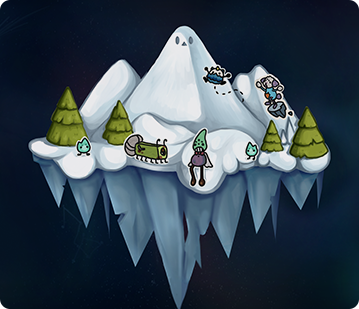

ICEAGE
Game design · Level design · Sound
A playful puzzle adventure shaped by children’s ideas.
01 Trailer
videos/project6-video.mp4 to this website folder.02 Overview
This was the last game I worked on during my second year of university, which took me seven weeks to complete. Our client was a class of 5th graders, and we had to turn their drawing of monsters into an actual game. We had three artists, two engineers and two designers working on the design together.
I focused on game design and level design, working on the mechanics of the characters and their movement to make the monsters feel lively and fun to control. I also worked on texturing using Substance 3D Designer and composed the music for the game. On top of that, I helped test the game and communicated with the client to make sure we stayed true to the kids' ideas. The end result is a fun puzzle game where you guide your monster buddies through different landscapes and eventually beat the boss. The work not only showcases our technical and creative capabilities, it also shows how we work together in a team and on a tight deadline.
04 Scenes & process
Screenshots, development work and details
Listen to the project.
Music and audio created for IceAge.